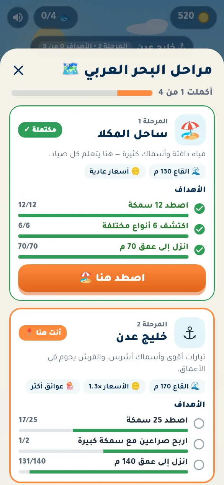
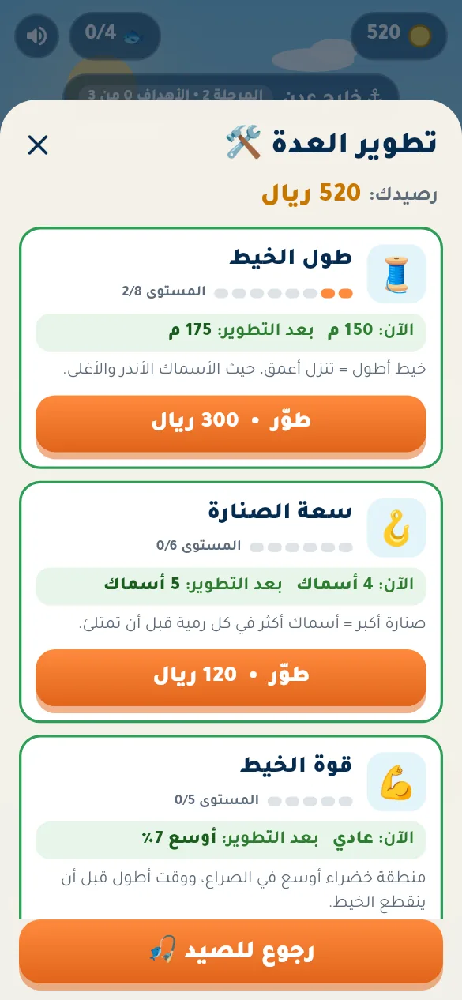
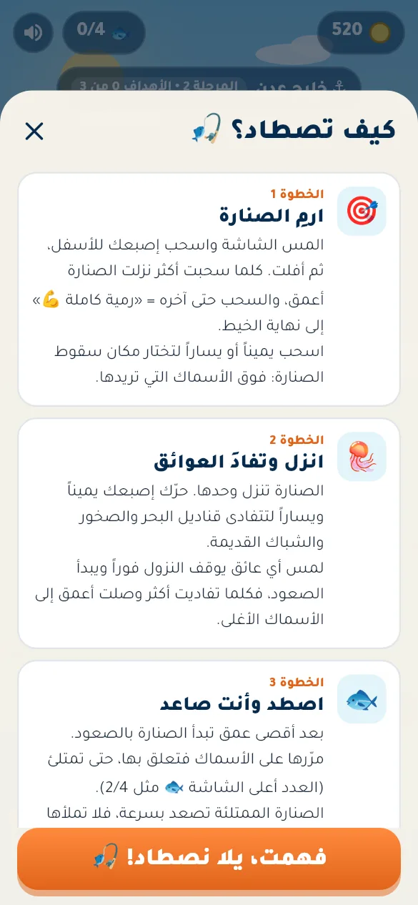
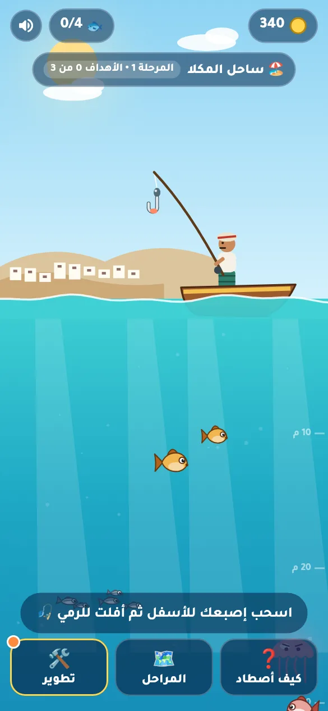

صياد البحر العربي
من ساحل المكلا إلى الأعماق
ارمِ صنارتك، تفادَ قناديل البحر والشباك القديمة، والتقط أسماكك وأنت صاعد… وإذا علق قرش، فاستعد للصراع!
20 نوعاً من الأسماك4 مراحلصراع الأسماك الكبيرةبالعربية بالكاملبدون إنترنتمجانية
قريباً على أندرويد







كيف تلعب؟
🎣
ارمِاسحب إصبعك للخلف وأفلت — كلما زاد السحب نزلت الصنارة أعمق
انزل وتفادَحرّك إصبعك يميناً ويساراً، ولمس أي عائق يبدأ الصعود فوراً🐟
اصطد وأنت صاعدمرّ بالصنارة على الأسماك حتى تمتلئ🦈
صارعاضغط للشد وأفلت للإرخاء، وأبقِ المؤشر في المنطقة الخضراءالمراحل 🗺️
- 🏖️ ساحل المكلا
القاع 130 م · هنا يتعلم كل صياد - ⚓ خليج عدن
القاع 170 م · أسعار ×1.3 والقرش في الأعماق - 🌴 جزيرة سقطرى
القاع 230 م · أسعار ×1.6 وأبو سيف - 🌑 أعماق المحيط الهندي
القاع 300 م · أسعار ×2 والحبار العملاق
لكل مرحلة أهداف، وإكمالها يفتح المرحلة التالية. طوّر خيطك لتصل أعمق.
ماذا في اللعبة؟
- 🛠️ طوّر عدّتك: خيط أطول، صنارة أكبر، خيط أقوى
- ❓ شرح مصوّر لطريقة الصيد عند أول تشغيل
- 🌊 ألوان الماء تتغيّر مع العمق حتى الظلام
- 💪 صراع حقيقي مع القرش والتونة والهامور
- 💔 «كانت بيدك!» — ترى السمكة التي ضاعت
- 🎉 الأسماك تطير فوق القارب عند الوصول
- 📖 إعلان عند كل سمكة جديدة في ألبومك
- 🪙 كل سمكة بوزنها وقيمتها بالريال
- 📳 اهتزاز يتصاعد أثناء الصراع
- 🔊 أصوات الموج والبكرة وانقطاع الخيط
أسماك البحر العربي
سردينعيدثمدسرطانشعريسمك الفانوسحبارشروةجش
كنعدسمك الطياردراكعقامأبو الشص
هامورتونة صفراء الزعانفقرشأبو سيف
قرش الحوت ✨الحبار العملاق ✨
قريباً: الحراج والألبوم الكامل، ومنطقة جديدة: باب المندب.
الخصوصية
اللعبة لا تجمع أي بيانات، وتقدّمك محفوظ على جهازك فقط.